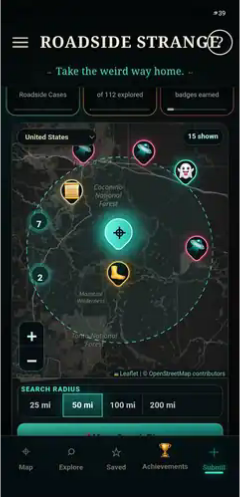

Hauntings
Ghost stories, haunted places and reported paranormal activity.

👽 Roadside Strange presents 👣
Sixteen clues. One mysterious question-mark pin. One mystery word. Find Rusty McGhost's clues in the free Roadside Strange app, solve them using Google Street View, then return here to enter your answers!
🌐 Start here · 📱 Find Rusty's ❓ pin off Long Island in the FREE app · 🗺️ Solve clues using Google Street View · 🔐 Submit answers on this website
🏡 NO TRAVEL REQUIRED · FREE APP NEEDED TO FIND THE CLUES
Starts November 15, 2026 · 12:00 PM Arizona time
The countdown is on! 👻
Website entry & official rules →Free to enter · No purchase or Premium subscription needed · U.S. adults 18+ · Official rules apply · Entries not yet open
LIVE ON iOS + ANDROID
Roadside Strange is a paranormal travel discovery app for haunted places, ghost stories, cryptid reports, UFO and UAP sightings, weird history and unusual roadside destinations. Read the stories behind real locations, save cases, build road trips and take the weird way home.
Free to download on iPhone and Android. Explore the map for free.NOW LIVE ON IPHONE & ANDROID
The House Is Listening. Explore your portable paranormal investigation toolkit — EMF Detector, EVP Recorder, Proximity Field, Spectral Scan, Paranormal Audio Sweep and more.
EXPLORE PARANORMAL SUITCASE ↗Ghost stories, haunted places and reported paranormal activity.
Cryptid sightings, creature reports and regional legends.
UFO sightings, UAP reports and unexplained cases.
Strange history, unusual places and roadside mysteries tied to real locations.

THE STRANGE GOES WITH YOU
Browse haunted places, cryptid reports, UFO sightings and strange history on the free map.
Let Strange Drive tell you about nearby strange places as you travel. It's part of Premium, along with the Road Trip Planner.
$4.49/month or $24.99/year
Unlock Road Trip Planner, Strange Drive and ad-free browsing. The app is free to download, and you can explore the map without Premium.
ROADSIDE STRANGE • GET IN TOUCH
Know somewhere haunted? Had a Bigfoot encounter? Spotted something in the sky you can't explain? Or know of a weird place that deserves a pin on our map?
Call or text us! Whether you've got a case you'd love us to investigate, a suggestion for the app, or just fancy chatting with the people behind Roadside Strange, we'd love to hear from you.
623-268-8741Your story could be our next strange discovery.
Roadside Strange is free to download on iPhone and Android. Browse the map for free; Premium unlocks Road Trip Planner and Strange Drive.